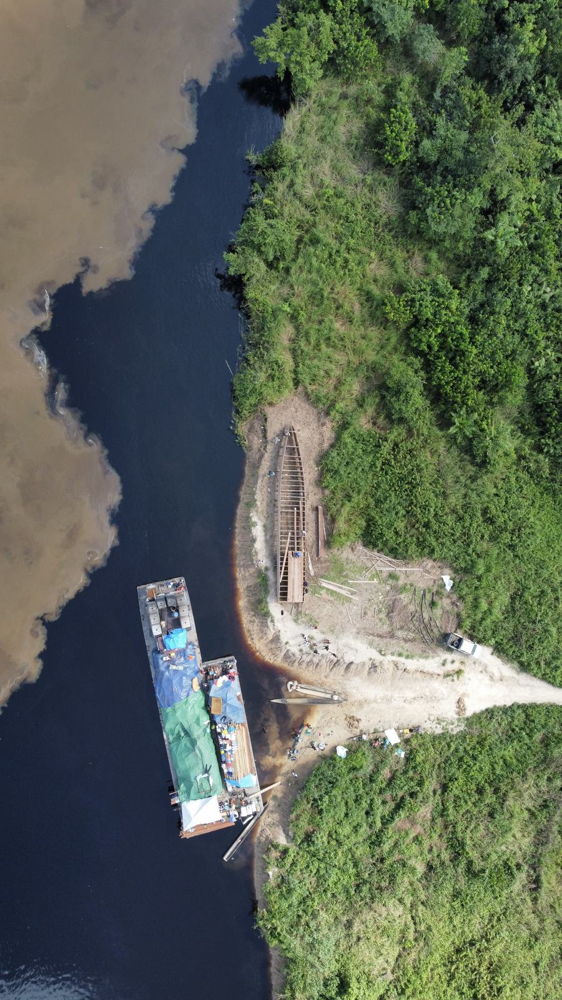
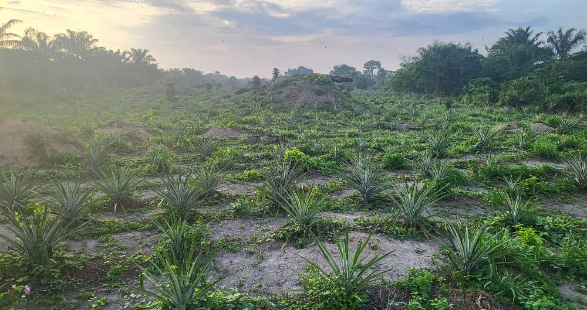

Buy, process, distribute.
The farm supplies direct, with no middleman, with volumes and lead times stated in advance. Four ways to work together, one starting point: your need.
Four ways to work with the farm.
Each route has its own contact person. None goes through a generic form.
Distributors and resellers
Oil, cocoa, safou, honey, wholesale or retail, with volumes committed for the season.
Tell us your needRestaurants and hotels
Regular supply of oil, fruit and vegetables, in Brazzaville and Pointe-Noire first.
Tell us your needPartners and investors
Expansion of the planted area, processing equipment, river logistics. On file.
Receive the dossierHow it works, in four steps.
The lead times shown are the ones the farm will have to keep. They are to be confirmed before publication.
- I
The need. You tell us the product, the use, the volume and the destination. We reply, with a sample if useful. Lead time: [ days ].
- II
The quote. Volume, packaging, incoterm, lead time. One page, not ten.
- III
The order. Deposit: [ % to be defined ]. The harvest or the lot is reserved.
- IV
The delivery. By river then road, or collection in Brazzaville / Pointe-Noire. Export: [ to be confirmed ].
All in one PDF, updated every season.
Figures, crops, capacities, governance, contacts. It is the piece most missing from the current website, and the one a buyer or an investor asks for first. To be produced with the farm.
Download the dossier document to be produced

What people ask us.
The answers are for the farm to write. The questions are the ones buyers ask.
What is the minimum order volume?
Do you deliver outside Congo?
How long between order and delivery?
Do you hold any certifications?
How does payment work?
Tell us your need
Product, use, volume, country: four answers are enough for the farm to make you a proposal.
Send my needThe form will be activated soon. Meanwhile, call +242 05 536 16 05 or write to us from the Contact page.